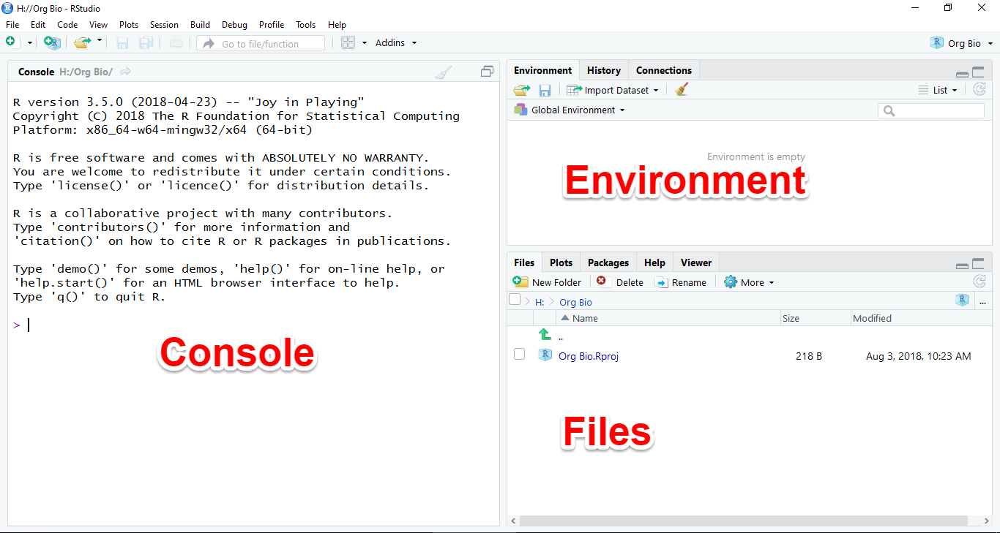
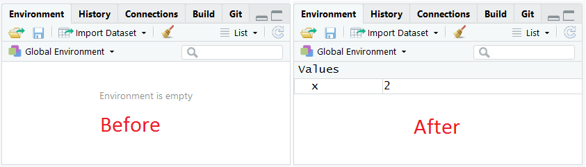

2 Introduction to RStudio
2.1 Objectives
Learn to:
- Use the console and source windows in RStudio
- Write and run code in an R script
- Document your R code with comments
- Transfer code from an R script to an R Markdown document
- Craft a narrative combining text explanation, code, and graphs
- Collaborate on Issues in GitHub
- Conduct peer review of an assignment
2.2 Overview of steps
Day 1
- Fill in blanks on README.Rmd
- Knit README.Rmd
- Read lab assignment
- Run the code in calculator.R as you work through the assignment
- Edit the code in calculator.R to use the new data from the self assessment
- Copy and paste your working code from calculator.R into the appropriate code chunks in assignment.Rmd
- Knit the assignment.Rmd document
- Commit and push all files to GitHub
- Copy the repository URL and paste it into the assignment submission folder on D2L
Day 2
Clean up the project
Go through the Completion Checklist
Peer review
Fix issues identified during peer review
2.3 Day 1: R as a Calculator
In this section, you will learn how to use the Console Window to run commands as you perform basic arithmetic operations. You will learn the basics of using functions, and finally learn about creating objects using the assignment operator.
2.3.1 The RStudio IDE
When you first open RStudio, you will see a window with three panes, the left pane will be on a tab named Console, the upper right pane will be on a tab named Environment, and the bottom right pane will be on a tab named Files, like this:

For now we will use the Console and Environment tabs.
2.3.2 The Console tab
The Console is where you enter commands (code) for R to interpret.
To give it a try, place your cursor in the Console window by clicking in it. You should see a greater than sign > (called the “prompt”) with a blinking cursor next to it.
Type the number 2 and press the enter key. Pressing enter is like asking R a question. R will evaluate the code you typed (yes, it’s really computer code!) and print the output, the answer to your question, on the screen like this:
`[1] 2`
Congratulations, you just wrote your first computer program!
The 2 is the answer to your question and the [1] indicates that the answer had one part. For the most part you can ignore the number in brackets.
For the rest of this tutorial, we will use the following notation to indicate code that you should type into the console, and what the output should look like:
1
#> [1] 1Note that in our examples, we do not show the prompt and we add two hash marks #> to indicate lines of output.
Tip If you ever try to type something in the console and nothing happens, it may be because some other pane has RStudio’s attention. Click the Console pane and make sure the blinking cursor is showing.
2.3.3 R as a calculator
You can think of R as a giant calculator. You type in a series of numbers and operators (+, -, /, *, etc.), press enter, and it evaluates what you typed and prints the output in the console.
Give it a try:
2 + 2
#> [1] 4
4 - 1
#> [1] 3
2 * 3
#> [1] 6
7 / 3
#> [1] 2.333333R uses standard MDAS order of precedence for operators: multiply, then divide, then add, then subtract. To change the order of operations you can use parentheses:
2 + 2 * 3
#> [1] 8
(2 + 2) * 3
#> [1] 12You can use exponentials like this:
3^2 # three squared is nine
#> [1] 9Any text following a hash tag (pound sign) is ignored, which allows you to include comments in your code as seen above.
2.3.4 Assign values
Much like a human brain, R is not only capable of performing calculations, but also of remembering things, of storing them for later. This is accomplished using the assignment operator <- like this:
x <- 2Here we have told R to create space in its memory, store the number two there, and name that space “x”. Now, whenever we refer to x, R will know we mean 2.
Notice that the above code did not produce any output in the Console. After performing an assignment operation, you need to type the name of the object and press enter. Try printing x in the console:
x
#> [1] 2You can now use x anywhere in your code, and R will always know what you mean:
x * 5
#> [1] 102.3.5 The Environment tab
You may also have noticed that when you ran the assignment command, the Environment pane changed. Instead of saying “Environment is empty”, it now has a list of values, with one named “x”.

Try it again and watch how the environment changes:
y <- 7And you can use as many of these objects as you want in the same bit of code:
y / x
#> [1] 3.5
z <- y + (x / 2)Try switching the Environment tab from List view to Grid view by clicking the word List.
To remove all the objects from the environment, you can click the broom button. If you switch to Grid view you can have the option of only removing the checked objects.
2.3.6 Functions
Some mathematical operations have no operator. For these you must use what is known as a function. For example, to take a square root:
sqrt(9)
#> [1] 3A function consists of the name of the function followed by parentheses, with a list of arguments inside the parentheses. Some functions take one argument, some take more, and some take none at all.
A very commonly used function is c(), the combine function. This combines multiple values into what’s known as a vector:
k <- c(1, 2, 10, 4.7, 5.0)
k
#> [1] 1.0 2.0 10.0 4.7 5.0There are some functions that take vectors as arguments. For example, the the length() function returns the number of elements, or length, of a vector object.
length(k)
#> [1] 5Useful mathematical functions include:
median(k) # median value
#> [1] 4.7
mean(k) # mean value
#> [1] 4.54
sd(k) # standard deviation
#> [1] 3.501143You can even nest functions. In the example below, the c() function is evaluated first, and its value is used as the argument for the length function.
Combining several of these features together, you can calculate the standard error of the mean (SEM) and a confidence interval around the mean for any set of numbers:
n <- length(k) # sample size
n
#> [1] 5
sem <- sd(k) / sqrt(n) # standard error of the mean
sem
#> [1] 1.565759Once you have calculated the SEM you can use it to estimate the upper and lower limits of a 95% confidence interval like this:
2.4 Assignment Overview
In the tutorial above, you learned how to write the R code to take a sample of numbers and estimate its mean, with a 95% confidence interval.
For your assignment, you will attempt to replicate this process with a new set of numbers, shown below.
6.05 4.89 3.32 4.93 5.25 5.04 4.91 2.84 5.60 5.34
Use the skills you have learned to write code to answer the following questions:
- What is the sample size, mean, median, and standard deviation of the sample?
- What is the standard error of the mean?
- What is the 95% confidence interval for the estimate of the mean?
Then write a “report” containing your results.
It’s probably easiest to approach this assignment as two consecutive steps:
First, write the R code to perform the analysis.
Second, copy that working R code to your lab report document.
Here are more detailed instructions on both these steps.
2.5 Write the code for the analysis
In the R as a Calculator example above, you were asked to type (or copy and paste) R code into an R script and run it. For the assignment, you will need to take that existing R code and edit it.
You have two options for how to do that. You could use the R script you created during the tutorial, or you can start with a fresh script with exactly the code you need. The second option is probably easier.
For convenience, the code used in the example above has been copied into an R script called calculator.R. You can use that code to start your assignment.
Open the calculator.R script by clicking its name in the Files tab (lower right pane). This will open the script in the source pane (upper left).
To differentiate this analysis from the previous one, let’s name our vector of data x instead of k. Make these changes by hand, or use the find and replace function (a magnifying glass icon in source pane). Put “k” (without the quotation marks) in the Find box and “x” in the Replace box. Check the box labeled “Whole words only”. Click Find, then click Replace, until there are no more k’s in the script. You can also use the Replace All button, but be careful! It’s easy to replace things you didn’t intend.
Next, find the line of code where you created the vector in the tutorial, which should look like this:
x <- c(1, 2, 10, 4.7, 5.0)In the line of code, replace the five numbers with the set of numbers given above. It’s always better to copy and paste those numbers into the code rather than typing (less change of a typo), but don’t forget to add the commas between them!
At this point, the code should all work as planned and you are ready to run it. Before you do, it might be a good idea to clear your environment. That way you won’t accidentally use the previous value of n or sem from the tutorial in this new analysis. To do this, click the broom icon in the Environment tab.
Now put your cursor on the first line of code and run it. Press the Run button in the source tab or use the keyboard shortcut Ctrl+Enter (Cmd + Return on a Mac). Continue running all the lines of code. If you get an error or don’t get the output you expected in the console, check with a classmate or the instructor.
Compare the answers below to those in your Console tab (lower left pane) to make sure you got the right answers.
Sample size =
10Mean =
4.817Median =
4.985Standard deviation =
0.9899725Standard error of the mean =
0.3130568-
Confidence interval =
4.203409 to 5.430591
Once you are satisfied with your answers, you can move on to the next activity.
2.6 Create your lab report
For each lab, you will create a lab report, which will be a Markdown document (.md) that contains text, tables, figures (usually graphs), and optionally some of the code you used to create the figures.
How do you create such a document? The answer is to use an R Markdown (.Rmd) file where you insert the text and R code. RStudio can then “knit” the pieces together and give you a Markdown (.md) document which is your lab report.
2.6.1 Open the lab report template
Your repository has been seeded with an R Markdown file to use as a template. The file is named assignment.Rmd. Your job is to add or edit the contents of that file and knit your actual lab report.
Open the assignment.Rmd document by clicking its name in the Files pane. Scroll through it to see the template you have to start with.
2.6.2 What’s in an R Markdown document?
There are three main components to an R Markdown document:
A YAML header
Narrative text
Chunks of R code that R will run when you “knit” the document
Let’s look at each component in more depth.
2.6.2.1 YAML header
You will notice some header information at the top, between two sets of three dashes, that looks like this:
When you knit the document, R will use the title as the page title and will put the author and date on the next line.
Notice that instead of writing the date in text, there is some R code. This is called inline R code in an R Markdown document. When you want to insert something generated by R into your text, you can use this kind of code. Inline code should start with a backtick and the letter r `r and end with another backtick `. Here is another example of inline code:
One plus one is
2
When R knits that it will appear as
One plus one is 2
2.6.2.2 Narrative text
This includes thinks like paragraphs of text, headings, lists, quoted text, etc. Think of this as the body of the report.
This is written in the Markdown language, a simple way to tell places like R and GitHub how it should look on the screen.
You can learn more about how to format your text in Markdown using these resources:
In the Go to the Help menu in RStudio and select Markdown Quick Reference
Basic Syntax on the Markdown Guide website
The new version of RStudio (version 1.4) has a very handy WYSIWYG (what you see is what you get) editor for R Markdown which allows you to write R Markdown documents like a word processor like Microsoft Word. To make use of this, download and install the newest version of RStudio.
2.6.2.3 Code Chunks
Code chunks are bits of R code that are executed when you knit the document. In the resulting Markdown (or other type) of document, the code is replaced by its output, which usually consist of text, tables or figures.
A code chunk looks like the following:
The three backticks ``` tell R to expect a chunk of code.
The curly braces tell R what kind of code to expect, the name of the code chunk, and some options for how to knit it. For example, in the code above, the r tells R to expect R code, and chunk-name is the name of the code chunk.
Names are not required, but they can be useful. When you try to knit your R Markdown document, any errors will show in the Markdown tab (bottom left pane). Having your code chunks named makes it easier to figure out where the error occurred.
The space in between the closing curly brace and the next three backticks is where the code goes.
Here’s an example of a code chunk with actual R code:
Anything you can write in an R script, you can write in an R code chunk, including comments as seen above.
2.7 Add code to R chunks
Copy the first lines of code from your calculator.R script and paste it in between the two lines that start with three backticks as seen below.
In your code, of course, c(1, 2, 3) will be replaced by your vector of numbers given above.
Check to make sure the chunk runs by clicking the green play button on the right side.
Continue down the R Markdown document, inserting the correct code into each code chunk.
Don’t edit the final code chunk that has the code to plot the data in it.
2.8 Knit the lab report
Save the file and click the knit button to knit the R Markdown document into a Markdown document.
Look at the preview to make sure everything looks okay.
2.9 Commit and Push
Save all your files.
In the Git tab, check the boxes next to all files, commit them, and push to GitHub.
Submit your assignment by copying your repository URL and pasting it into the D2L assignment submission folder.
2.10 Day 2: Project Cleanup and Peer Review
In Day 1 of this lab, you created your first full lab report.
Now that it is done, Day 2 will focus on tidying up a few loose ends in your RStudio Project and peer review of the finished product.
2.11 Project cleanup
Let’s start by ensuring a nice, clean RStudio Project, and tidy Lab Report, and a succinct README. Perform the following steps:
-
Update your lab report
Open your assignment.Rmd file
Add a Session Info heading, text, and R code chunk at the end of the document. The easiest way is to copy and paste that section from your README.Rmd and paste it here. Then edit the R code so it says
sessioninfo::session_info()by removing the codec("tidyverse"). This will ensure that the list of packages produced reflects those actually used in the analysisKnit your assignment.Rmd afterwards
-
Update your README
Open README.Rmd
-
Change the link to calculator.Rmd in the Repository contents section
The part in the square brackets should now say “Lab 2 Report”
The part in the parentheses should say “assignment.md”
Remove the session info heading, text, and R code chunk at the end. This info is better suited for a script that actually does the analysis, your assignment.Rmd
Knit your README.Rmd afterwards
Change your Project Options so they do not automatically save your load or save your project workspace or history on startup or exit. See the Project Options help page for instructions.
Commit all changes and push to GitHub
2.12 Completion Checklist
Before we begin the peer-review process, go through the completion checklist below to make sure your project is ready to be reviewed by your peers.
-
Your repository contains the following files
- .gitignore file
- README.Rmd
- README.md
- assignment.Rmd
- assignment.md
- calculator.R
- lab-2-YourUserName.RProj
- the image file for the assignment.md (this is in a folder called assignment_files)
-
Your README.md should have the following
- Your name in the YAML header item for “author”
- Removed the line that says “INSTRUCTIONS: REMOVE THIS LINE” that was on the original template
- At least two bullets of text under lab objectives
- A link to your Lab 2 Report assignment.md
- NO session info section (it should be removed)
-
Your assignment.md should have the following
- Your name in the YAML header item for “author”
- code and output showing the data (x), sample size, mean, median, standard deviation, standard error of the mean, and upper and lower confidence limits
- In the text paragraph about the confidence interval, you replaced “___” with the correct numbers
- Session info added at the end
General Project options are set to No, not (Default)
2.13 Peer Review
In your groups, decide who will review who’s projects. Each project should be reviewed by at least two peers.
Next, create an Issue on GitHub requesting peer review using the following steps
- Go to your repository on https://github.com
- Click on the Issues button near the top
- Create a new issue (green button)
- For the title, enter “Peer review requested”
- In the boxed labeled “Leave a comment”, tag the people who will review your project. You do this by typing “@” followed by their GitHub username (no space), for example @chrismerkord
- Submit the issue
Finally, respond to any peer review requests you receive.
Check your notifications to see if you are mentioned in any Issues
Provide your review as a Reply to the Issue they tagged you in
Go through the Completion Checklist above, noting any issues the person should address. Write those issues in your Reply
Be kind in the way you write your review. Try to sound helpful and supportive rather than critical or combative.
Give the other person the quality of review you yourself would hope to receive. If you review someone’s project and you both missed something on the completion checklist, that person will lose points.
2.14 Grading Rubric
Your instructor will grade your assignment based on the following criteria:
Is the project complete and accurate (see the Completion Checklist above)
Have you requested peer review?
Have you performed any peer reviews requested of you? If so, did you go through the checklist carefully and find any issues the person needs to address?
Have you updated any issues identified during peer review?
Note: according to this rubric, you can lose points twice for missing something in the Completion Checklist: once for not having that item done, and again for not responding to any peer review suggestions.